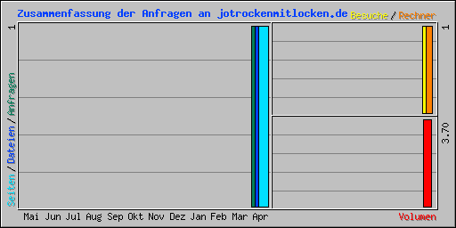

| Zusammenfassung nach Monaten | ||||||||||
|---|---|---|---|---|---|---|---|---|---|---|
| Monat | Tagesdurchschnitt | Monats-Summe | ||||||||
| Anfragen | Dateien | Seiten | Besuche | Rechner | Volumen | Besuche | Seiten | Dateien | Anfragen | |
| Apr 2019 | 1 | 1 | 1 | 1 | 1 | 3.70 KB | 1 | 1 | 1 | 1 |
| Summen | 3.70 KB | 1 | 1 | 1 | 1 | |||||
| Generated by Webalizer Xtended (RB30) by Patrick Frei based on Webalizer Version 2.23-08 |